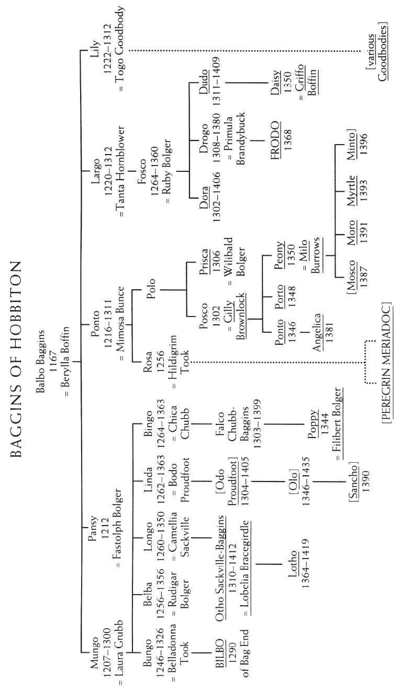
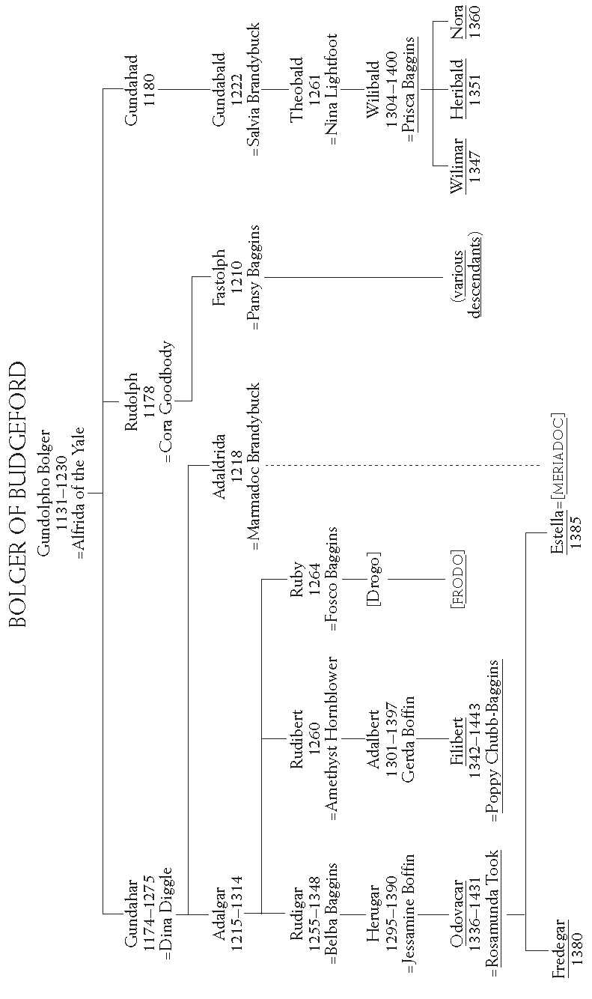
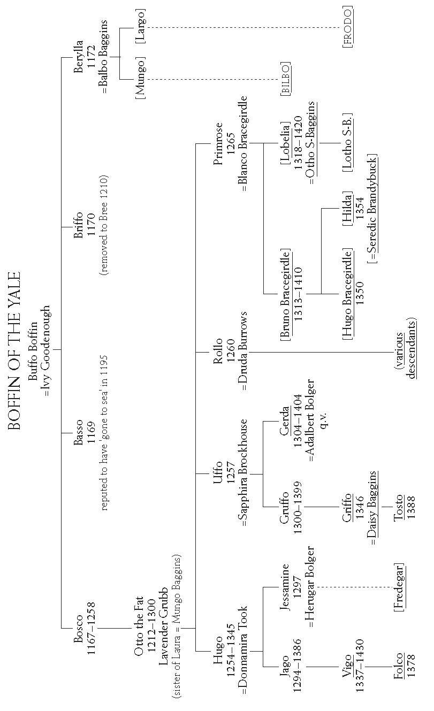
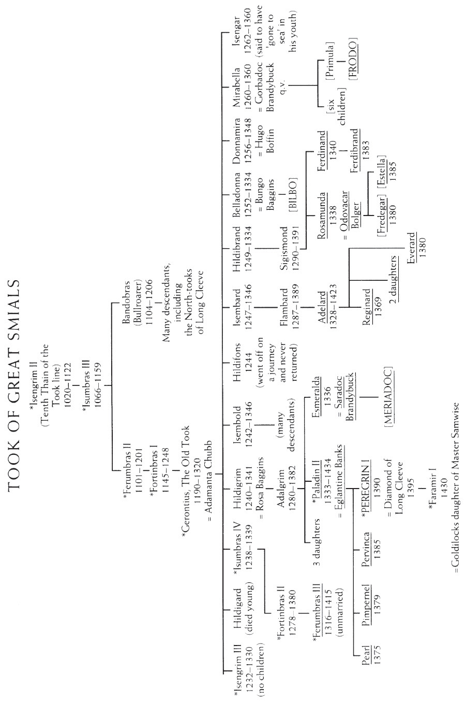
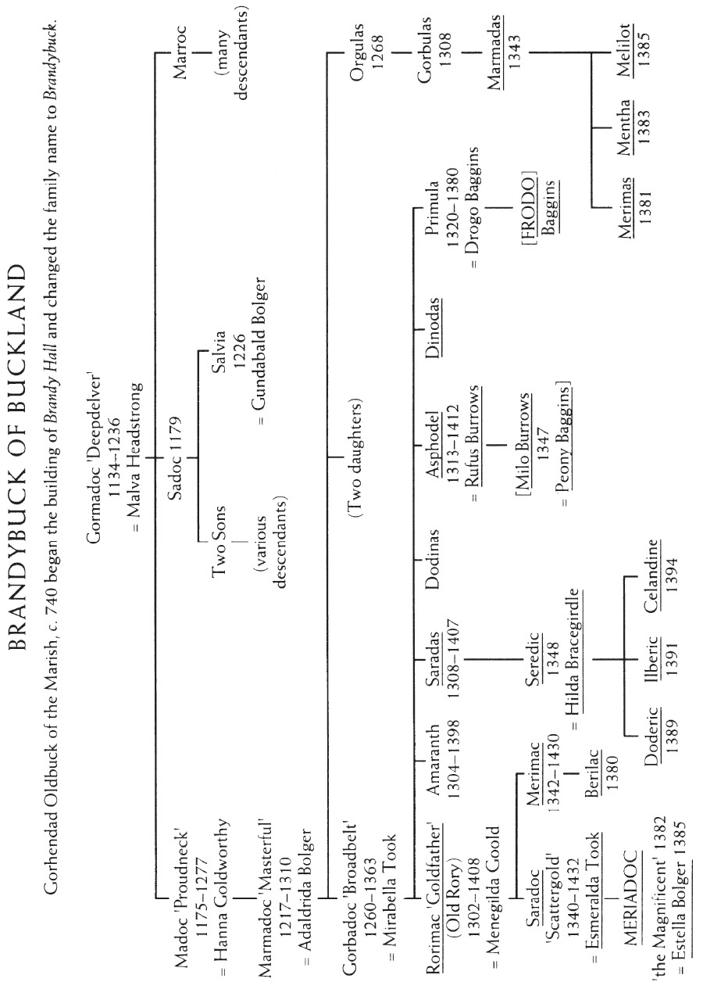
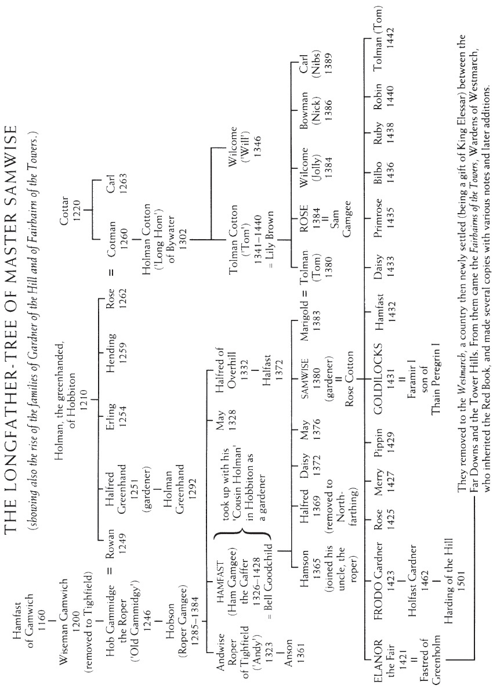

The names given in these Trees are only a selection from many. Most of them are either guests at Bilbo’s Farewell Party, or their direct ancestors. The guests at the Party are underlined. A few other names of persons concerned in the events recounted are also given. In addition some genealogical information is provided concerning Samwise the founder of the family of Gardner, later famous and influential.
The figures after the names are those of birth (and death where that is recorded). All dates are given according to the Shire-reckoning, calculated from the crossing of the Brandywine by the brothers Marcho and Blanco in the Year I of the Shire (Third Age 1601).





